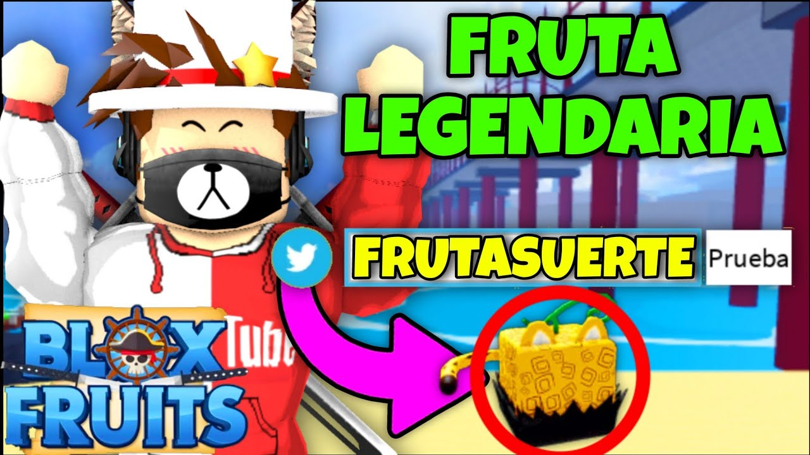

1. Cómo conseguir Robux gratis (métodos legales)

Los Robux son la moneda premium de Roblox, y aunque normalmente se compran, existen formas legales de obtenerlos gratis:
- Canjea tarjetas regalo de Roblox (a veces se regalan en eventos).
- Participa en sorteos oficiales de creadores o marcas.
- Crea y vende ropa o accesorios en el catálogo (requiere cuenta premium).
- Desarrolla juegos y monetízalos con pases o Gamepasses.
✅ Evita páginas sospechosas o generadores falsos: podrían robar tu cuenta.
2. Juegos más virales de Roblox en 2025

Estos son los juegos más populares y jugados del año:
- Blox Fruits: con miles de jugadores activos, es ideal para fans del anime.
- Pet Simulator X: colecciona y mejora mascotas para volverte millonario.
- Adopt Me!: intercambia mascotas y decora tu hogar.
- Doors: un juego de terror y suspenso que ha explotado en visitas.
üî• ¡Estos juegos marcan tendencia en TikTok y YouTube!
3. Trucos para subir rápido de nivel en Blox Fruits

Blox Fruits es uno de los juegos más jugados de Roblox. Aquí tienes trucos para subir rápido:
- Enfócate en completar misiones en orden para ganar XP rápidamente.
- Usa frutas con ataques en área para eliminar enemigos más rápido.
- Únete a un servidor privado para farmear sin interrupciones.
⚡ ¡Con dedicación, alcanzarás el nivel máximo en menos tiempo!
4. Cómo conseguir mascotas legendarias en Adopt Me

Adopt Me es famoso por sus mascotas. Aquí tienes algunos consejos para obtener las legendarias:
- Intercambia con otros jugadores que busquen objetos raros.
- Participa en eventos que regalen huevos especiales.
- Compra huevos reales en la guardería y cruza los dedos.
- Cuida tu mascota constantemente para evolucionarla a neón o mega neón.
üêæ ¡La clave es la paciencia y el intercambio inteligente!
5. Cómo avanzar más rápido en Pet Simulator X

Pet Simulator X es perfecto para coleccionistas. Aquí te dejamos algunos tips para avanzar rápidamente:
- Enfócate en mejorar tus mascotas fusionándolas o comprando las de mayor rareza.
- Activa potenciadores como triple coins y super lucky antes de abrir huevos.
- Completa logros diarios para obtener recompensas extras.
- Haz intercambios justos para conseguir mascotas exclusivas.
üêæ ¡El progreso constante te llevará a desbloquear nuevas zonas y mundos secretos!
6. Cómo ganar en Murder Mystery 2
Murder Mystery 2 es un juego de deducción y reflejos. Aquí algunos trucos para ganar:
- Si eres inocente, mantente en movimiento y evita pasillos cerrados.
- Como sheriff, apunta bien y espera a estar seguro antes de disparar.
- Si eres el asesino, elimina en silencio y cambia de ruta para no levantar sospechas.
üî™ ¡El sigilo y la estrategia son claves para la victoria!
7. Estrategias para sobrevivir más rondas en Doors
Doors es un juego de terror muy popular. Estos consejos te ayudarán a sobrevivir más:
- Escucha sonidos de advertencia antes de que aparezca una entidad.
- Usa los casilleros para esconderte solo cuando sea necesario.
- No uses el encendedor todo el tiempo; guárdalo para habitaciones oscuras clave.
- Aprende el patrón de aparición de cada entidad para saber cómo actuar.
üö™ ¡Cada puerta te acerca más al misterio!
8. C√≥mo ganar más monedas en Brookhaven üè°RP

Brookhaven es uno de los juegos de roleplay más jugados. Aunque no tiene una moneda oficial, puedes:
- Simular trabajos como policía, médico o conductor de bus.
- Organizar roleos con otros jugadores que te den recompensas simbólicas.
- Usar tu creatividad para crear historias que ganen popularidad en servidores.
üè° ¡Brookhaven se trata de imaginaci√≥n y comunidad!
9. Cómo encontrar frutas legendarias en Blox Fruits

Las frutas legendarias son clave para destacar en Blox Fruits. Aquí te explicamos cómo encontrarlas:
- Revisa la tienda de frutas cada 1 hora para ver qué aparece.
- Explora islas en servidores públicos: a veces aparecen aleatoriamente.
- Únete a grupos o comunidades que alerten sobre apariciones.
- Usa el Gamepass de notificación de fruta si tienes Robux disponibles.
üçá ¡Una buena fruta puede cambiar toda tu estrategia de combate!
11. Cómo obtener objetos gratis en eventos Roblox

Roblox organiza eventos especiales donde puedes conseguir objetos exclusivos gratis:
- Participa en eventos de marcas (Nike, Spotify, Vans, etc.).
- Completa misiones dentro del juego evento.
- Reclama los premios directamente desde tu inventario.
üéÅ ¡No olvides activar las notificaciones de eventos en la app de Roblox!
12. Cómo conseguir emotes nuevos y bailes en Roblox

Los emotes te permiten expresarte y bailar en los juegos. Para obtener nuevos:
- Visita la tienda de emotes en el catálogo.
- Busca emotes gratis y agrégalos a tu avatar.
- Activa el menú de emotes con la tecla "/" dentro de los juegos compatibles.
üíÉ ¡Explora los más populares y úsalos en tus juegos favoritos!
13. Cómo usar códigos promocionales de Roblox

Los códigos promocionales te permiten obtener objetos gratis para tu avatar. Para canjearlos:
- Visita roblox.com/promocodes
- Ingresa el código válido y haz clic en "Canjear".
- Los objetos aparecerán en tu inventario si el código aún está activo.
üéüÔ∏è Algunos c√≥digos son por tiempo limitado, ¡aprovecha rápido!
14. Mejores juegos de rol (roleplay) en Roblox 2025

¿Te encanta actuar como en la vida real? Estos juegos de roleplay son los más populares en 2025:
- Brookhaven üè°RP: Crea tu propia historia en una ciudad abierta.
- Livetopia: Simula trabajos, vive en casas lujosas y más.
- Club Roblox: Forma una familia, decora tu casa y adopta mascotas.
üé≠ ¡Ideal para jugar con amigos y crear historias!
15. Cómo canjear tarjetas regalo de Roblox

Las tarjetas regalo de Roblox son una excelente forma de obtener Robux o membresías:
- Compra tarjetas físicas en tiendas o digitales en línea.
- Ve a roblox.com/redeem.
- Ingresa el código de tu tarjeta y obtén Robux o suscripciones.
üéâ ¡Perfecto para regalos o premiar tu progreso!
16. Cómo crear tu propio juego en Roblox Studio

¿Quieres ser desarrollador? Así puedes comenzar:
- Descarga Roblox Studio desde el sitio oficial.
- Elige una plantilla (Obby, ciudad, Tycoon, etc.).
- Personaliza el entorno y prueba tu juego.
- Publica y comparte con amigos.
üõ†Ô∏è ¡Empieza tu carrera como creador en Roblox!
17. Qué es el Premium y si vale la pena
La membresía Premium de Roblox te ofrece:
- Robux mensuales según el plan elegido.
- Acceso para vender objetos y ropa.
- Beneficios en juegos como descuentos y ventajas.
üíé Si eres jugador activo o desarrollador, ¡s√≠ vale la pena!
18. Cómo proteger tu cuenta de estafas

La seguridad es clave. Sigue estos consejos:
- Activa la verificación en dos pasos (2FA).
- No compartas tu contraseña, ni siquiera con amigos.
- Evita sitios sospechosos que prometen Robux gratis.
- Verifica siempre el correo de tu cuenta.
üîê ¡Mant√©n tu cuenta segura y disfruta sin preocupaciones!
19. Cómo hacer ropa para vender en Roblox
Vender ropa es una forma popular de ganar Robux:
- Diseña tu prenda con plantillas oficiales (camisa o pantalón).
- Sube tu diseño desde el panel de creación.
- Asigna un precio y promociona tu tienda.
üëï ¡Muchos creadores han hecho fama y fortuna con moda virtual!
20. Cómo activar el modo oscuro en Roblox

El modo oscuro es ideal para jugar de noche. Así se activa:
- Ve a Configuración (ícono de engranaje).
- Selecciona la pestaña "Tema".
- Elige "Oscuro" y guarda los cambios.
üåô ¡Cuida tu vista y dale estilo a tu cuenta!
21. Cómo conseguir Badges (insignias) únicas
Las insignias demuestran tus logros. Para conseguirlas:
- Explora juegos que las ofrezcan como recompensa.
- Completa misiones, eventos o desafíos especiales.
- Algunos desarrolladores crean badges raras y limitadas.
üèÖ ¡Presume tus logros en tu perfil!
22. Cómo usar comandos secretos en juegos de Roblox

Algunos juegos permiten comandos especiales. Para usarlos:
- Presiona "/" para abrir el chat.
- Escribe comandos como "/e dance" o "/e wave".
- Consulta la descripción del juego por comandos únicos.
ü§ñ ¡Sorprende a tus amigos con movimientos secretos!
23. Cómo mejorar el rendimiento de Roblox en PC o móvil

¿Tu juego va lento? Prueba esto:
- Baja la calidad gráfica desde Configuración.
- Cierra otras apps o pestañas que consuman recursos.
- Usa conexión WiFi estable.
⚙️ ¡Con buen rendimiento, todo se disfruta mejor!
24. Los mejores youtubers de Roblox en español

¿Buscas creadores que enseñen y entretengan?
- Robleis: gameplays variados y humor.
- Lyna: aventuras en Adopt Me y Brookhaven.
- Karim Juega: ideal para los más pequeños.
üì∫ ¡Suscr√≠bete para no perderte trucos y diversi√≥n!
25. Cómo conseguir vehículos gratis en juegos de Roblox

Muchos juegos permiten tener autos, motos o helicópteros:
- Completa misiones o recompensas diarias.
- Busca códigos activos que desbloqueen vehículos.
- Explora eventos que regalan ítems de transporte.
üöó ¡Mueve con estilo en tus mundos favoritos!
26. Trucos para ganar más Robux creando Gamepasses

Si haces juegos, monetízalos con pases especiales:
- Desde Roblox Studio, crea un pase con beneficios únicos.
- Asigna un precio y agrega una descripción llamativa.
- Promociona tu juego en grupos o redes.
üí∞ ¡Es una de las mejores formas de generar ingresos en Roblox!
27. Cómo personalizar tu avatar sin gastar Robux
Ser original no cuesta nada si sabes dónde buscar:
- Explora la sección de ropa y accesorios gratis.
- Participa en eventos que den ítems exclusivos.
- Usa combinaciones creativas con lo que ya tienes.
üßç ¡Tu estilo, tu identidad virtual!
28. Cómo unirte a grupos para ganar beneficios

Los grupos de Roblox ofrecen ventajas únicas:
- Acceso a ropa exclusiva y códigos privados.
- Participación en sorteos y torneos del grupo.
- Recompensas dentro de juegos si eres miembro.
ü§ù ¡Unirte a comunidades activas puede abrirte muchas puertas!
29. Juegos secretos o poco conocidos que debes probar

Además de los populares, hay joyas ocultas en Roblox:
- Kaiju Paradise: monstruos vs humanos con mucho caos.
- The Intruder: experiencia de terror con jumpscares.
- Panic: una mezcla de supermercado y supervivencia.
üïµÔ∏è ¡Explora más allá del top 10 y descubre nuevas aventuras!
30. Retos virales que puedes hacer con tus amigos

En TikTok e Instagram, estos retos arrasan:
- Reto de sobrevivir 100 puertas en Doors sin morir.
- Roleo de familias extremas en Brookhaven o Livetopia.
- Competencia de baile usando emotes en Tower of Hell.
üì± ¡Graba tu reto y compártelo en redes sociales!